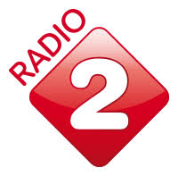
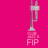
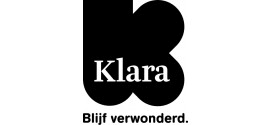

Mijn favoriete radiostations
Don't ask me why.
FIP
Frans radiostation met focus op wereldmuziekmix.
NPO1
Nederlandse nieuwszender met lichte muzikale omlijsting.
NPO2

Nederlands Easy Listening station.
FIP GROOVE
Kind van FIP --Good Groove
FIP JAZZ

Kind van FIP -- just Jazz
KLARA

Classical music station from Belgium